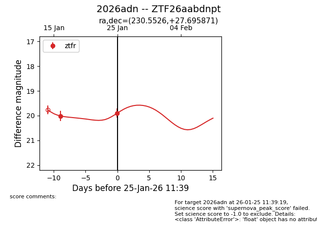
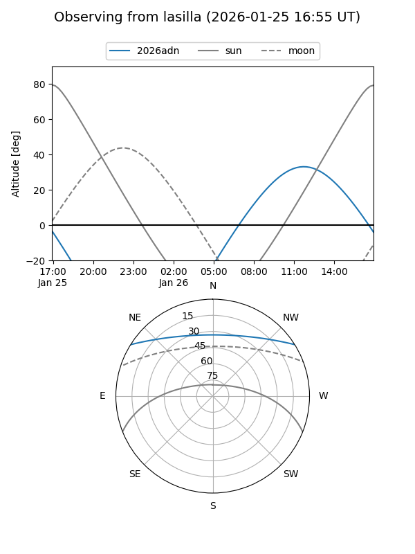
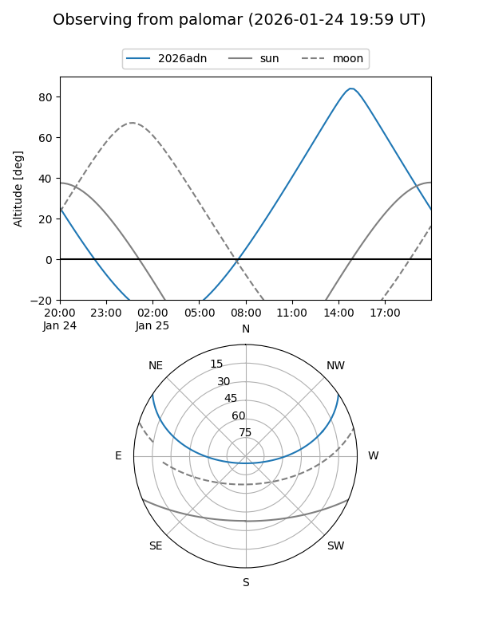
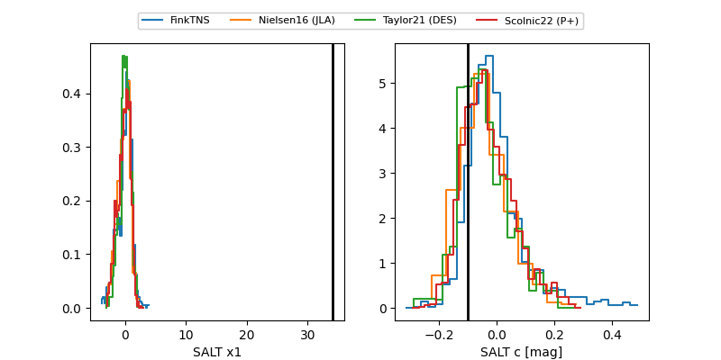

2026adn
Target 2026adn at 2026-01-25 11:41
Aliases and brokers:
FINK: link
Lasair: link
ALeRCE: link
TNS: link
YSE: link
alt names
ZTF26aabdnpt (ztf,fink_ztf)
2026adn (tns,yse)
Coordinates:
equatorial (ra, dec) = 230.5526,+27.69587
equatorial (HMS+DMS) = 15:22:12.63,+27:41:45.14
galactic (l, b) = (42.7994,+56.66674)
Flags:
Photometry:
last ztfr=19.90
2 ztfr detections
Lightcurve

Visibility


Additional plots
